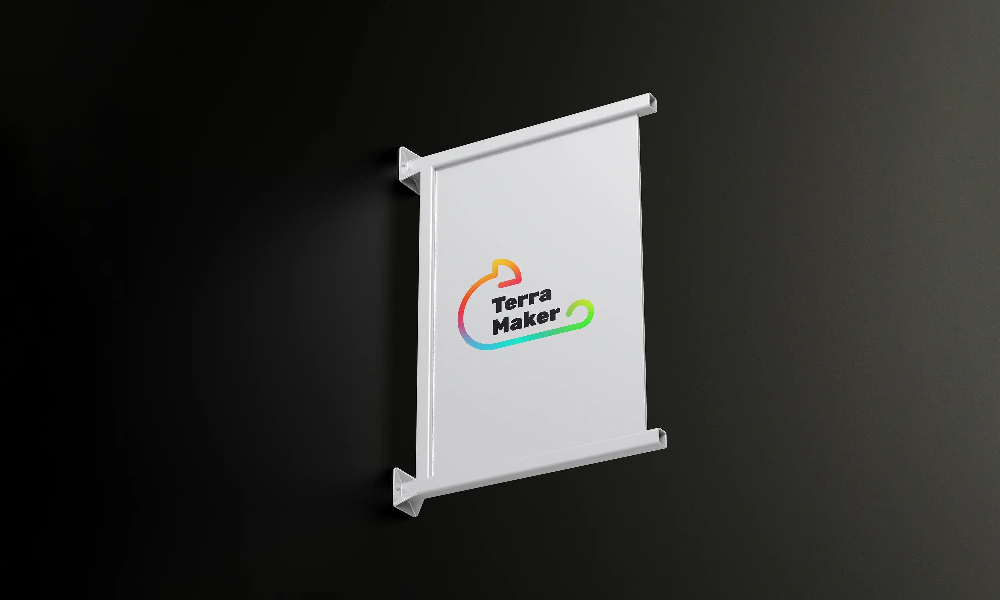
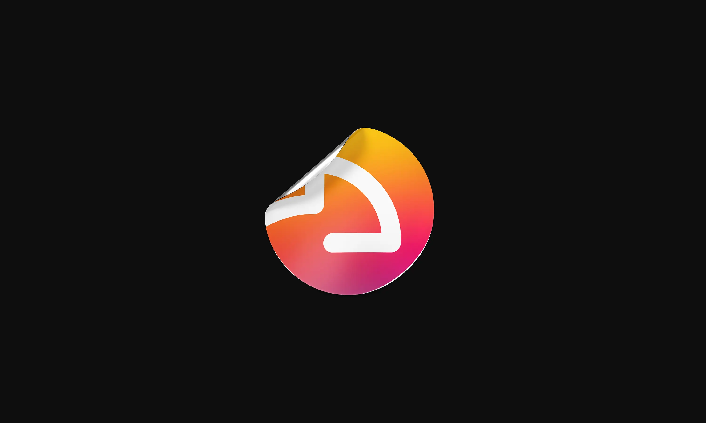
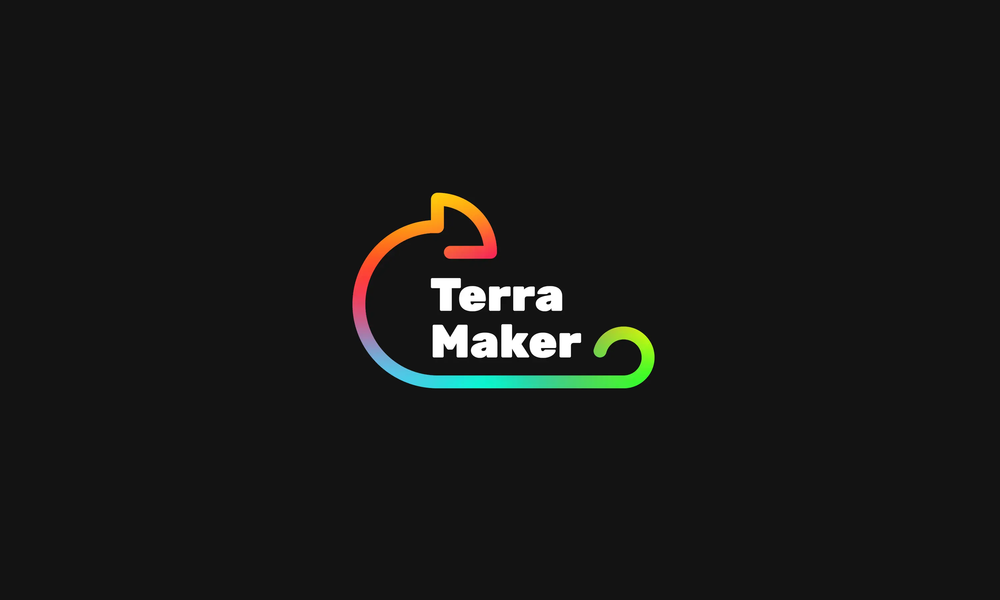
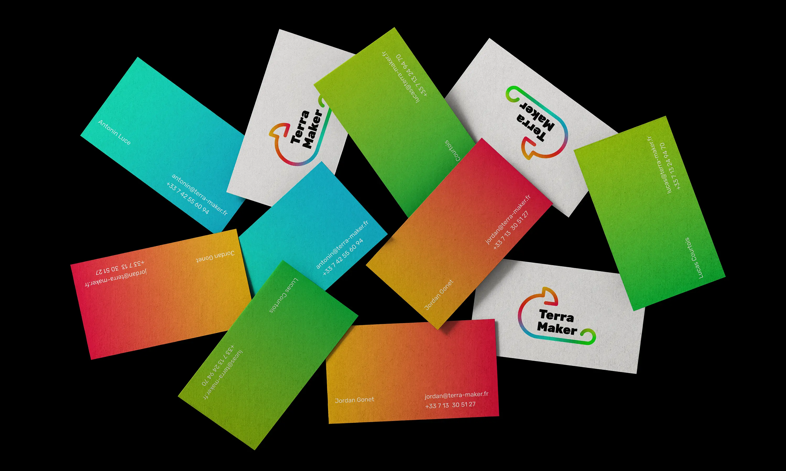
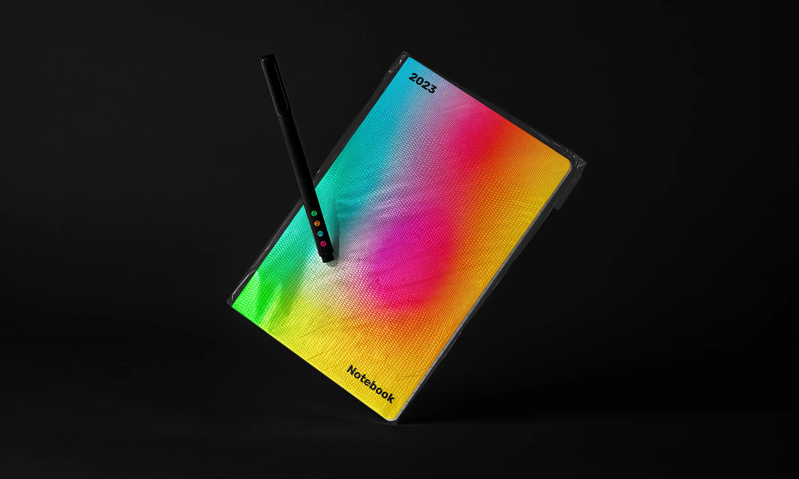
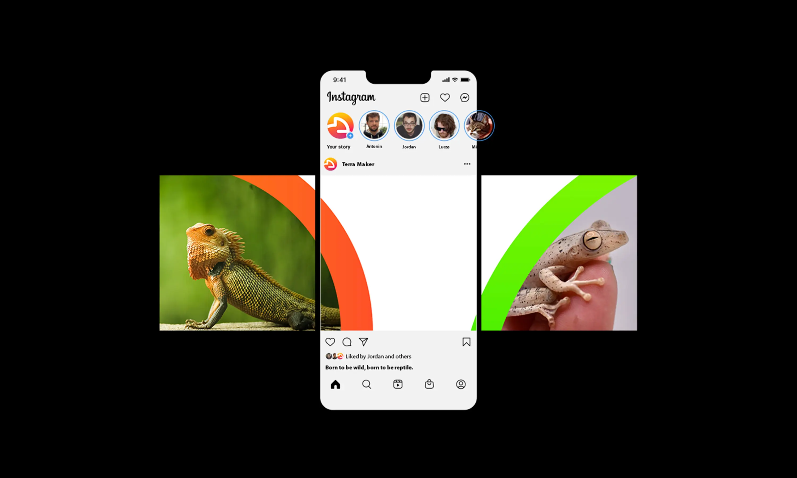
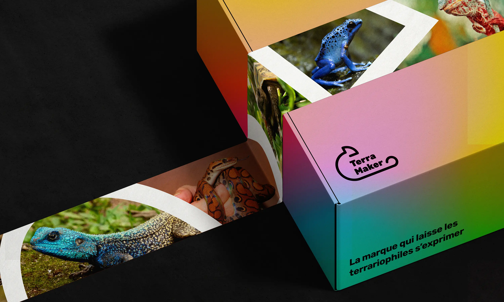
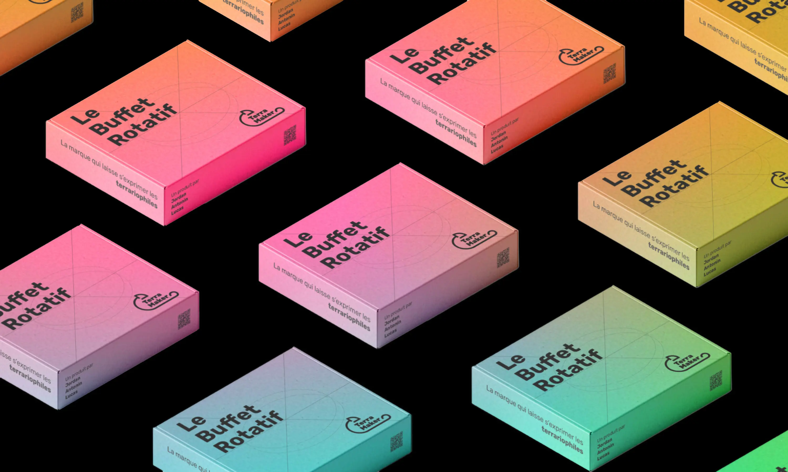

--> 

-->
Terra Maker
Branding
The brand that lets terrariophiles express themselves.
Terra Maker is above all a story of friendship... Everything started early 2021. Jordan, a doctor of paleontology specializing in animal locomotion, decides to take the plunge and buys his first reptile, a helmeted chameleon from Yemen, which he names Napoleon.
Realizing that there was no technical solution for feeding his reptile in his absence, he contacted his childhood friends Antonin and Lucas, an engineer and industrial designer respectively. Together, they developed an initial prototype.
Participatory financing is scheduled for the end of 2023.
A colourful identity
The brand's identity must foster a feeling of closeness to the customer (particularly through social networks and customer service). The Terra Maker team really liked the free typography I've been using on my site for several years, Rubik. It has several weights, is sans-serif, with rounded parts: this typeface is unique, modern yet elegant and clean.
As for the colors, I was inspired by those of the chameleon mentioned above. Green, red, blue... bright colors! In fact, the color of chameleons varies according to internal factors (state of health, stress, etc.) and external factors (temperature, sunlight).
For the shape of the logo, I chose to use the chameleon symbol in a minimalist way, with rounded parts in reference to the chosen typography.
Year
July 2023
Lire en Français 🇫🇷